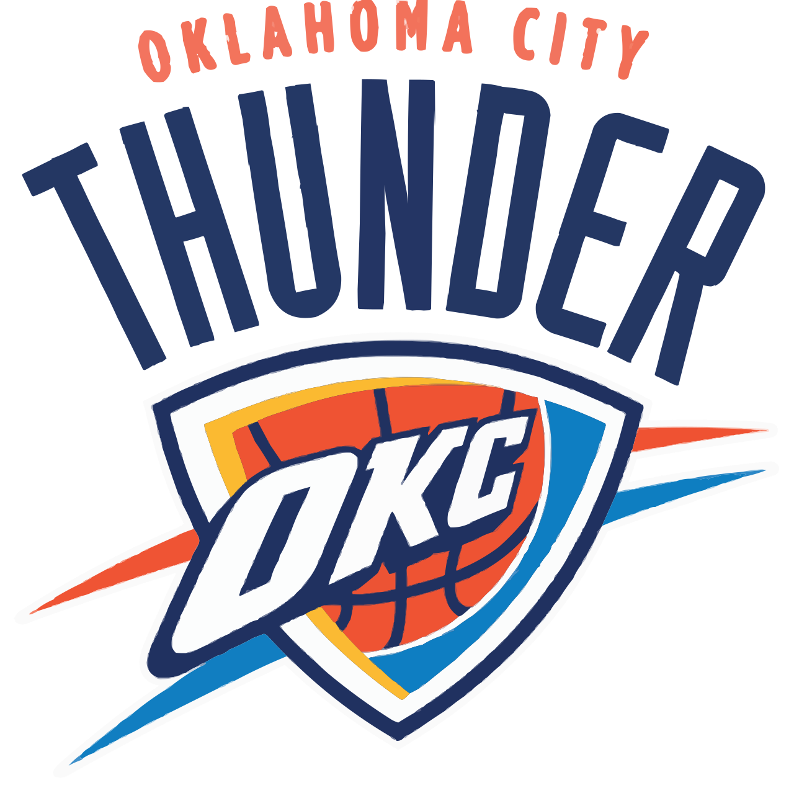

Oklahoma City Thunder
チーム情報
- アリーナ: Paycom Center
- 所在地: Oklahoma City, Oklahoma
- カンファレンス: Western
- ディビジョン: Northwest
- 優勝回数: 1 (1979 as Seattle SuperSonics)
シーズン比較: 2023-24 vs 2024-25
サマリー: ここに、2シーズン間のパフォーマンスにおける最も顕著な変化や重要なポイントを記述します。（例：オフェンス効率は大幅に向上しましたが、ディフェンスリバウンドに課題が見られます。）
主要指標の変化
2023-24シーズン
| Value | |
|---|---|
| PACE | 101.6 |
| AST | 19.6 |
| TO | 11.4 |
| ORR | 21.3 |
| DRR | 0.0 |
| REBR | 48.8 |
| EFF FG% | 57.3 |
| TS% | 60.8 |
| OFF EFF | 117.0 |
| DEF EFF | 109.5 |
| NET EFF | 7.5 |
2024-25シーズン
| Value | |
|---|---|
| PACE | 102.6 |
| AST | 19.2 |
| TO | 10.3 |
| ORR | 24.2 |
| DRR | 0.0 |
| REBR | 50.0 |
| EFF FG% | 56.0 |
| TS% | 59.3 |
| OFF EFF | 117.3 |
| DEF EFF | 104.7 |
| NET EFF | 12.6 |